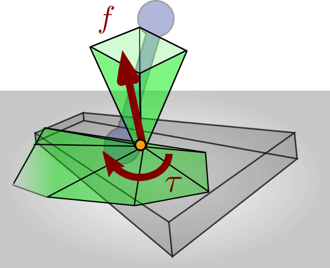
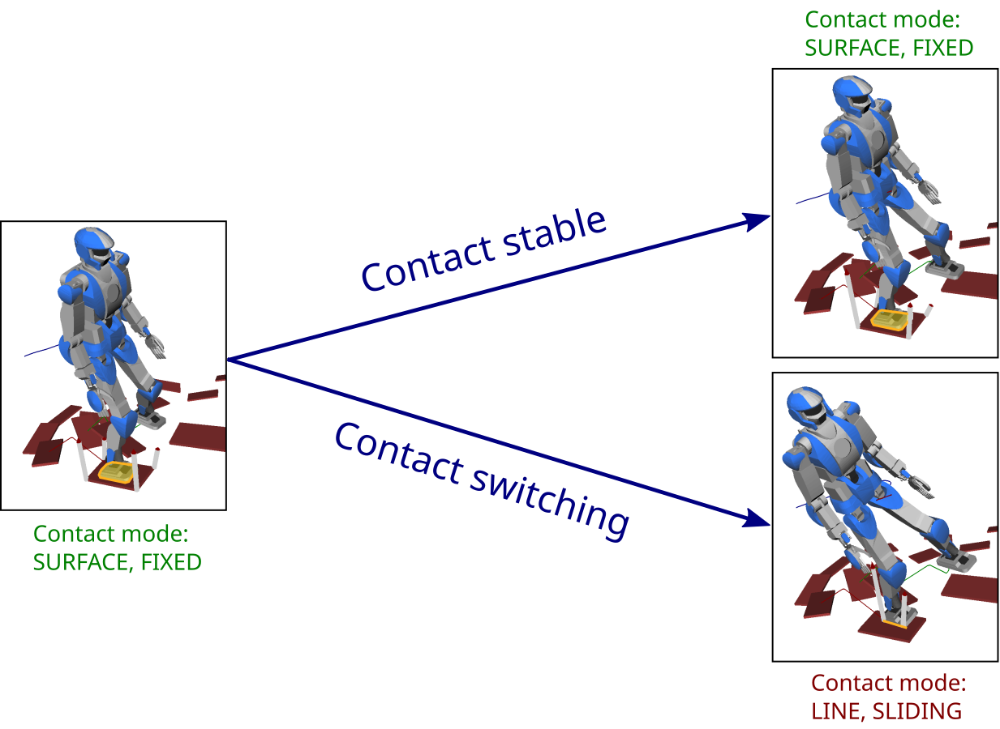

Contact stability is a condition used to check the feasibility of robot motions. It should not be confused with the notion of (Lyapunov) stability, a notion from control theory used to formalize the performance of a controller.
Feasibility of a contact wrench¶

Contact is maintained as long as its wrench stays inside the 6D friction cone.
Everything starts with a mobile robot, i.e., a robot that is able to establish and break temporary contacts with its environment. Think for instance of a humanoid that alternatively plants its feet on the ground to walk. At each contact, the sum of forces exerted by the environment on the robot is represented by a contact wrench. As long as the contact is maintained, this wrench will lie inside its 6D friction cones. The contact breaks are switches to a different contact mode as soon as its wrench hits the boundaries of this friction cone.
Contact stability, modes and switches¶
As the robot moves, its Newton-Euler equations of motion induce a coupling between the motion’s whole-body momentum (linear and angular) and all contact wrenches. If there exists no set of wrenches that simulatenously lie in their friction cones and sum up to the whole-body momentum, the motion is infeasible. When such wrenches exist, the motion may be feasible. This latter condition is known as weak contact stability:
Definition (Pang and Trinkle): a motion of the robot is weakly contact-stable if and only if there exists contact wrenches summing up to its whole-body momentum.
Weak contact stability is the underlying criterion used in a variety of humanoid motion planners and pattern generators. Note that, despite its use of the term “stability”, this notion is only a feasibility condition. The “weakness” of its definition is relative to the more general definition of contact stability in the context of contact modes:
- A motion is contact-stable when all its contacts stay in the same contact mode, i.e., there is no contact switch.
- A motion is weakly contact-stable if it may keep all its contacts in the same contact mode, i.e., there exists contact wrenches that support the motion without changing contact mode.
- A motion is strongly contact-stable if it must keep all its contacts in the same contact mode, that is, all contact wrenches that support the motion can only be realized without changing contact mode. (This condition is hard to achieve and rarely used in practice.)
The bottom line of these definitions is to avoid contact switches as best as possible. For a concrete example, think of these switches as follows:

In practice, only a few contact modes are exploited by current humanoid controllers. Roughly, only two contact modes: fixed (full) contacts, and no contact. Detecting contact switches on real robot, or providing a controller that would be general enough to deal with multiple contact modes, is still a widely open question, as of 2016.
Checking contact stability¶
In practice, checking contact stability for a given robot motion amounts to solving a Quadratic Program (QP). Let denote the centroidal momentum of the motion, which is the whole-body momentum taken at the center of mass . Then, feasible contact wrenches exist if and only if a solution to the following QP can be found:
where is the vector of coordinates for the contact wrench taken at a contact point and in the world frame. The matrix describes a linearized friction cone model in the local frame, and is thus applied after a rotation of wrench coordinates from the world to the local contact frame.
When contact stability needs to be checked more than once, it becomes more profitable to compute frictional wrench cones rather than solving quadratic programs.
To go further¶
The notions of contact modes is pervasive in the works of Jeffrey Trinkle, and was I think coined by him. My favorite paper in this line computes wrench cones for planar rigid-body contacts, and was a fruitful basis to apply contact wrench cones to humanoid locomotion. Before wrench cones provided a faster way to test contact stability, Boyd and Wegbreit computed optimal contact forces by solving convex optimization problems (that become quadratic programs when using linearized friction cones).
Discussion ¶
Feel free to post a comment by e-mail using the form below. Your e-mail address will not be disclosed.